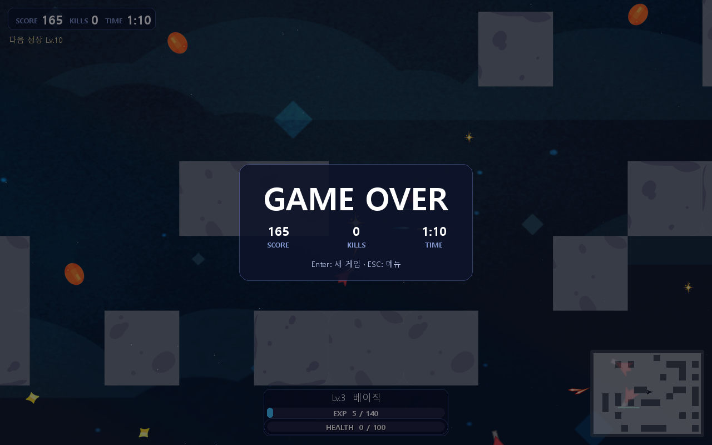
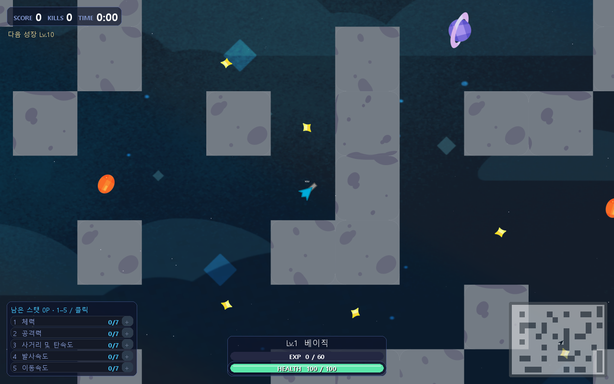

22개 실험, 무엇을 바꿔서
어떤 결론이 났는가
이 계보는 "조준 보조 이산 행동" 계열의 모든 실험을 006부터 022까지 추적합니다. 핵심 설계는 원본 5,139차원 벡터 관찰을 개체 인코더+지형 CNN으로 압축하고, 이동(9)·회전 세기(9)·발사(2)·능력치 강화(6)·진화(5)를 각각 독립된 범주로 선택하는 MultiDiscrete 행동입니다. 조준(회전+발사)은 한동안 별도의 작은 "조준 신경망"으로 떼어내 PPO로 집중 학습한 뒤(009~013), 그 가중치를 고정하고 몸체·이동·성장만 다시 학습하는(014) 2단계 전략이 이 계열의 핵심 아이디어입니다. 위 분기도의 상자를 클릭하면 해당 실험 페이지로 이동합니다.
max_steps가 행동 주기에 맞춰 200초에 맞춰져 있음) 0~200초로 통일했습니다.001~005 · 이전 단계 (모방 혼합 → 첫 순수 PPO)
001_imitation_combat ~ 005_pure_ppo_full둘 다 이 계보의 직접 조상이 아님best_model.zip으로 선택됐습니다.| 지점 | 평균 점수 | 평균 생존 | 비고 |
|---|---|---|---|
| 001 무학습 시작 | 8.33 | 82.27s | 예비(3시드) |
| 001 규칙 교사 | 2313.33 | 135.29s | |
| 001 모방 직후 | 3070.00 | 200.00s | 3시드 모두 200s 생존 |
| 001 모방+PPO 34,048 step | 2640.00 | 193.17s | PPO 보정이 오히려 하락 |
| 002 (001 모방 + full PPO 66,304) | 3028.33 | 181.43s | 처치↑지만 best 선정 안 됨 |
| 003 (001 모방 + DAgger혼합 + PPO 16,640) | 3966.67 | 200.00s | 이번 단계 best 채택 |
| 지점 | step | 평균 점수 | 평균 생존 |
|---|---|---|---|
| 004 전(무학습) | 0 | 36.67 | 55.58s |
| 004 후 | 132,608 | 3.33 | 60.85s |
| 005 후(선택 후보 유지) | 396,032 | 0.00(선택 전 정책 유지) | 43.62s |
pure_ppo_model.zip). 이 결과는 "원본 5,139차원을 그대로 쓰는 순수 PPO가 쉽지 않다"는 교훈으로 남았고, 006부터는 개체 인코더+지형 CNN+별도 조준 신경망이라는 더 구조화된 아키텍처로 다시 시작합니다 — 그래서 006을 004/005의 자식이 아니라 새 뿌리로 그렸습니다.006_spatial_aim
0 → 264,192 step제자리 · 세 갈래로 재분기| label | step | score | survival |
|---|---|---|---|
| before | 0 | 3.3 | 33.6s |
| progress | 67,584 | 120.8 | 58.0s |
| progress (best) | 135,168 | 168.3 | 63.8s |
| progress | 202,752 | 137.5 | 22.5s |
| after | 264,192 | 155.0 | 33.5s |


best.zip은 135,168로 고정됩니다.007_spatial_duel
135,168 → 399,360 step개선 없음| 바뀐 설정 | 부모 | 현재 |
|---|---|---|
| stage (연습 장면) | aim(빈 맵) | duel(비사격 적 2기) |
reward_profile·learning_rate(0.0003)·entropy(0.01)는 006과 동일.
| label | step | score | survival |
|---|---|---|---|
| before | 135,168 | 168.3 | 63.8s |
| progress | 202,752 | 132.5 | 35.8s |
| progress | 270,336 | 133.3 | 29.1s |
| progress | 337,920 | 109.2 | 61.4s |
| after | 399,360 | 106.7 | 45.7s |
008_full_score_v3
135,168 → 337,920 step중단(stopped)score_v3로 교체(정렬된 발사 즉시 보상, 적중/피해/사망 비용 조정).| 바뀐 설정 | 부모 | 현재 |
|---|---|---|
| stage (연습 장면) | aim(빈 맵) | full(기본 게임) |
| reward_profile | 없음 | score_v3 |
learning_rate(0.0003)·entropy(0.01)는 006과 동일.
| label | step | score | survival |
|---|---|---|---|
| before | 135,168 | 168.3 | 63.8s |
| progress | 202,752 | 108.3 | 28.3s |
| progress | 270,336 | 148.3 | 48.0s |
| after(중단) | 337,920 | 135.0 | 33.9s |
009_focused_arena
135,168 → 399,360 step채택 · 010으로 계속| 바뀐 설정 | 부모 | 현재 |
|---|---|---|
| stage (연습 장면) | aim(빈 맵) | arena(사격 적 3기) |
| reward_profile | 없음 | score_v4 |
| learning_rate | 0.0003 | 0.0002 |
| entropy | 0.01 | 0.005 |
| label | step | score | survival |
|---|---|---|---|
| before | 135,168 | 168.3 | 63.8s |
| progress (best) | 202,752 | 188.3 | 44.2s |
| progress | 270,336 | 125.0 | 43.6s |
| progress | 337,920 | 140.8 | 60.4s |
| after | 399,360 | 138.3 | 40.0s |
best.zip(202,752 step)이 선택됐고, 010이 이 체크포인트를 이어받습니다. 다만 399,360까지 더 돌리면 다시 138.3으로 떨어지는 같은 패턴이 반복됩니다 — "한동안 오르고 다시 떨어지는" 곡선이 이 파이프라인 전체에서 되풀이됩니다.010_stationary_range
202,752 → 466,944 step개선 없음 · final.zip으로 계속freeze_base_actor로 고정하고, 조준 잔차 + 크리틱만 무작위 고정 표적(1타 사격)으로 집중 학습.| 바뀐 설정 | 부모 | 현재 |
|---|---|---|
| stage (연습 장면) | arena(사격 적 3기) | range(정지 표적) |
| reward_profile | score_v4 | score_v5 |
| learning_rate | 0.0002 | 0.0003 |
| freeze_base_actor | 없음 | True |
entropy(0.005)는 009와 동일.
| label | step | score | survival |
|---|---|---|---|
| before | 202,752 | 188.3 | 44.2s |
| progress | 270,336 | 111.7 | 27.9s |
| progress | 337,920 | 135.0 | 49.5s |
| progress | 405,504 | 133.3 | 59.4s |
| after | 466,944 | 134.2 | 58.0s |
best.zip이 아니라 final.zip(가장 최근 가중치, 466,944)에서 이어받습니다. "표본 6개 시드의 평가 점수"와 "실제로 더 정교해진 조준"이 항상 일치하지는 않는다는 판단입니다.011_unified_moving_range
466,944 → 669,696 step중단(stopped) · 점점 하락| 바뀐 설정 | 부모 | 현재 |
|---|---|---|
| stage (연습 장면) | range(정지 표적) | moving_range(이동 표적) |
reward_profile(score_v5)·learning_rate(0.0003)·freeze_base_actor(True)는 010과 동일.
| label | step | score | survival |
|---|---|---|---|
| before | 466,944 | 128.3 | 42.1s |
| progress | 534,528 | 127.5 | 28.0s |
| progress (best) | 602,112 | 132.5 | 59.0s |
| after(중단) | 669,696 | 71.7 | 61.7s |
012_independent_static
669,696 → 933,888 step점수 3.3→623 대도약| 바뀐 설정 | 부모 | 현재 |
|---|---|---|
| 조준 입력 | 장면·속도 포함 | 장면·속도 잡음 제거 |
| entropy | 0.005 | 0.0 |
| stage (연습 장면) | moving_range(이동 표적) | range(정지 표적, 재학습) |
freeze_base_actor(True)·freeze_aim(False, 신규 명시)·learning_rate(0.0003)는 유지.
| label | step | score | survival |
|---|---|---|---|
| before | 669,696 | 3.3 | 69.3s |
| progress | 737,280 | 45.8 | 62.1s |
| progress | 804,864 | 474.2 | 126.4s |
| progress (best) | 872,448 | 623.3 | 118.3s |
| after | 933,888 | 595.0 | 110.8s |
013_independent_moving
872,448 → 1,136,640 step점수 623→820 추가 개선| 바뀐 설정 | 부모 | 현재 |
|---|---|---|
| stage (연습 장면) | range(정지 표적) | moving_range(이동 표적) |
| entropy | 0.0 | 0.002 |
freeze_base_actor(True)·freeze_aim(False)·learning_rate(0.0003)·reward_profile(score_v5)는 012와 동일.
| label | step | score | survival |
|---|---|---|---|
| before | 872,448 | 761.7 | 136.0s |
| progress | 940,032 | 675.0 | 147.6s |
| progress | 1,007,616 | 655.8 | 161.0s |
| progress | 1,075,200 | 599.2 | 175.0s |
| after (best) | 1,136,640 | 820.0 | 114.6s |
014_full_body_control
1,136,640 → 1,339,392 step820→1,459 · 새 공개 모델freeze_aim=True로 고정하고, 반대로 freeze_base_actor=False로 풀어 몸체(CNN 이동)·합법적 성장 선택을 기본 게임에서 재학습 — 012/013과 정반대로 "고정/학습" 대상을 맞바꿈.| 바뀐 설정 | 부모 | 현재 |
|---|---|---|
| stage (연습 장면) | moving_range(이동 표적) | full(기본 게임) |
| freeze_base_actor | True | False |
| freeze_aim | False | True |
| learning_rate | 0.0003 | 0.0001 |
| entropy | 0.002 | 0.008 |
reward_profile(score_v5)는 유지.
| label | step | score | survival |
|---|---|---|---|
| before | 1,136,640 | 820.0 | 114.6s |
| progress | 1,204,224 | 810.0 | 131.7s |
| progress | 1,271,808 | 860.8 | 121.4s |
| after (best) | 1,339,392 | 1,459.2 | 156.9s |


pure_ppo_model.zip(공개 기본 모델)이 되고, 015/016/017 세 실험이 모두 여기서 분기합니다.015_full_early_stability
1,339,392 → 1,603,584 step채택 안 됨| 바뀐 설정 | 부모 | 현재 |
|---|---|---|
| entropy | 0.008 | 0.004 |
| selection_objective | 없음 | early_stability |
reward_profile(score_v5)·freeze_base_actor(False)·freeze_aim(True)·learning_rate(0.0001)는 014와 동일 — 조건 자체는 거의 바꾸지 않은 대조군 run.
| label | step | score | survival |
|---|---|---|---|
| before | 1,339,392 | 1,459.2 | 156.9s |
| progress | 1,471,488 | 1,333.3 | 96.6s |
| after(중단) | 1,603,584 | 1,490.0 | 141.6s |
016_full_score_focus
1,339,392 → 1,474,560 step채택 · 018의 기반score_v6로 교체 — 부분 피해·정렬 발사 보조 보상을 줄이고, 피격·사망 비용을 올려 "실제 점수·생존"에 더 직접 맞춤.| 바뀐 설정 | 부모 | 현재 |
|---|---|---|
| reward_profile | score_v5 | score_v6 |
| entropy | 0.008 | 0.004 |
freeze_base_actor(False)·freeze_aim(True)·learning_rate(0.0001)는 014와 동일. score_v6 세부: shape_damage_scale 0.03→0.01, enemy_damage_scale 0.05→0.01, damage_fraction_penalty 2.0→3.0, death_penalty 3.0→6.0, aimed_shot_bonus 0.15→0.02.
| label | step | score | survival |
|---|---|---|---|
| before | 1,339,392 | 1,459.2 | 156.9s |
| progress | 1,406,976 | 947.5 | 86.7s |
| after | 1,474,560 | 895.8 | 84.9s |
017_full_aim_refinement
1,339,392 → 1,470,464 step채택 안 됨| 바뀐 설정 | 부모 | 현재 |
|---|---|---|
| freeze_base_actor | False | True |
| freeze_aim | True | False |
| entropy | 0.008 | 0.001 |
reward_profile(score_v5)·learning_rate(0.0001)는 014와 동일.
| label | step | score | survival |
|---|---|---|---|
| before | 1,339,392 | 1,459.2 | 156.9s |
| progress | 1,404,928 | 1,009.2 | 109.7s |
| after | 1,470,464 | 1,258.3 | 157.5s |
018_reaction_calibration
1,474,560 step (추가 학습 없음)현재 공개 모델decision_frame_skip=2로 저장해 재생·평가·화면 저장이 모두 이 주기를 따름).| 바뀐 설정 | 부모 | 현재 |
|---|---|---|
| decision_frame_skip | 4 | 2 |
| 추가 PPO step | — | 0 (가중치 동일) |
이동·조준·발사·강화·진화 선택은 모두 학습된 정책이 그대로 선택 — 자동 규칙·모방학습 없음.


evaluations.jsonl이 없습니다. 대신 아래는 2프레임 주기로 맞춘 "이전 014" vs "016+2프레임=018" 비교를 새 20개 held-out 시드(17001~18910)로 측정한 결과입니다 — 이 숫자가 실제 승격 판단에 쓰였습니다.| 지표 | 이전 014 | 018 |
|---|---|---|
| 120초 평균 점수 | 835.25 | 1,003.75 |
| 120초 점수 p25 | 618.75 | 788.75 |
| 120초 내 1,000점 도달 | 7/20 | 11/20 |
| 평균 적 처치 | 3.55 | 4.70 |
| 400초 도달 | 1/20 | 4/20 |
held-out 20시드 최종 점수
| 17001 | 17102 | 17203 | 17304 | 17405 | 17506 | 17607 | 17708 | 17809 | 17910 | 18001 | 18102 | 18203 | 18304 | 18405 | 18506 | 18607 | 18708 | 18809 | 18910 | |
|---|---|---|---|---|---|---|---|---|---|---|---|---|---|---|---|---|---|---|---|---|
| 이전 014 | 660 | 1575 | 840 | 910 | 525 | 2565 | 1605 | 2030 | 2090 | 720 | 430 | 1610 | 1000 | 610 | 1025 | 1180 | 1040 | 2105 | 715 | 105 |
| 018 | 2170 | 1695 | 1835 | 2520 | 880 | 1895 | 1590 | 1320 | 1545 | 2750 | 790 | 920 | 1885 | 640 | 805 | 1080 | 785 | 970 | 435 | 2180 |
pure_ppo_model.zip(현재 공개 모델)입니다.019_deployment_cadence
1,474,560 → 1,677,312 step중단(stopped) · best는 유지| 바뀐 설정 | 부모 | 현재 |
|---|---|---|
| decision_frame_skip | 4(014/016 학습 당시) | 2(실제 학습도 2프레임에서) |
| learning_rate | 0.0001 | 0.00003 |
| entropy | 0.004 | 0.002 |
reward_profile(score_v6)·freeze_base_actor(False)·freeze_aim(True)는 016과 동일.
| label | step | score | survival |
|---|---|---|---|
| before | 1,474,560 | 1,923.8 | 175.0s |
| progress | 1,542,144 | 1,688.8 | 166.2s |
| progress | 1,609,728 | 1,751.2 | 190.0s |
| after (best) | 1,677,312 | 1,963.8 | 177.4s |
020_time_discount
1,677,312 → 1,808,384 step완료 · 단독 채택 안 됨 · 022의 재료gamma를 0.995 → sqrt(0.995)≈0.99750로 조정(2프레임 주기에선 한 행동이 물리 2틱을 건너뛰므로, 같은 "물리 시간 기준 할인"을 맞추려면 gamma를 제곱근해야 함) + 보상 프로파일 score_v7.| 바뀐 설정 | 부모 | 현재 |
|---|---|---|
| gamma | 0.995 | 0.997497(=sqrt(0.995)) |
| reward_profile | score_v6 | score_v7 |
learning_rate(0.00003)·entropy(0.002)·freeze_base_actor(False)·freeze_aim(True)는 019와 동일.
| label | step | score | survival |
|---|---|---|---|
| before | 1,677,312 | 1,963.8 | 177.4s |
| progress | 1,742,848 | 1,646.2 | 157.4s |
| after | 1,808,384 | 1,821.2 | 200.0s |
021_cadence_aim_refinement
1,677,312 → 1,808,384 step완료 · 단독 채택 안 됨| 바뀐 설정 | 부모 | 현재 |
|---|---|---|
| freeze_base_actor | False | True |
| freeze_aim | True | False |
| reward_profile | score_v6 | score_v5 |
| entropy | 0.002 | 0.001 |
learning_rate(0.00003)는 019와 동일.
| label | step | score | survival |
|---|---|---|---|
| before | 1,677,312 | 1,963.8 | 177.4s |
| progress | 1,742,848 | 1,877.5 | 192.8s |
| after | 1,808,384 | 1,176.2 | 148.0s |
022_checkpoint_blend
추가 PPO 0 step · 가중치 평균만실험 후보로만 보존 · 기본 모델 교체 안 함| 바뀐 설정 | 부모 | 현재 |
|---|---|---|
| 가중치 구성 | 018 100% | 018 50% + 020 50% (가중 평균) |
| 추가 PPO step | — | 0 |
두 부모 모두 순수 PPO로 학습했고, 평균 과정 자체에는 시연·모방학습이 없습니다.


| 지표 | 018(기존) | 022 blend_050(후보) |
|---|---|---|
| 120초 평균 점수 | 1,139.00 | 1,163.50 (+2.2%) |
| 120초 점수 p25 | 865.00 | 650.00 (-24.9%) |
| 최종 평균 점수 | 1,591.25 | 2,057.75 (+29.3%) |
| 최종 점수 중앙값 | 1,495.00 | 1,947.50 |
| 평균 생존 | 185.72s | 235.43s (+26.8%) |
| 400초 생존 | 2/20 | 4/20 |
held-out 20시드 최종 점수
| 31001 | 31102 | 31203 | 31304 | 31405 | 31506 | 31607 | 31708 | 31809 | 31910 | 32001 | 32102 | 32203 | 32304 | 32405 | 32506 | 32607 | 32708 | 32809 | 32910 | |
|---|---|---|---|---|---|---|---|---|---|---|---|---|---|---|---|---|---|---|---|---|
| 018(기존) | 1120 | 1130 | 1890 | 1090 | 705 | 2525 | 1010 | 525 | 1300 | 1780 | 2545 | 3005 | 1550 | 2280 | 1450 | 1540 | 1440 | 2155 | 875 | 1910 |
| 022 blend_050(후보) | 1175 | 1080 | 2120 | 1935 | 570 | 4350 | 545 | 1960 | 2395 | 2640 | 2395 | 4115 | 590 | 3975 | 1230 | 670 | 1480 | 2455 | 3805 | 1670 |
blend_050.zip은 실험 후보로 보존되고, 현재 공개 모델은 그대로 018입니다. 이것으로 이 파이프라인의 22개 실험 계보가 끝납니다.